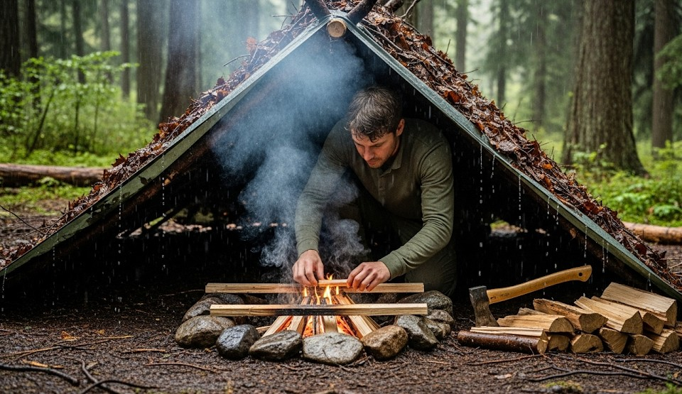

Building a Rainproof Fire After Days of Rain
Objective
Get a cooking flame in saturated forests by exposing dry cores, creating a hot-start fire lay, and shielding from rain.
Scenario (Example)
Example: Two days of rain; wood is soaked; you need a boil for water and a warming fire.
Fuel Ladder (Wet-Wood Version)
- Feather sticks from split cores
- Pencil-lead to pencil-thick dry splits
- Thumb to wrist-thick splits for sustain
Steps
- Harvest dead standing wood; avoid groundfall.
- Split to dry cores; make 10–15 feather sticks.
- Build a log cabin base to keep tinder off wet ground.
- Ignite with ferro rod/lighter under a roofed tarp edge.
- Feed only splits until a coal bed forms; add larger fuel later.
Wind & Rain Control
- Pitch a low tarp with a vent gap; never melt nylon with flame.
- Use your body as a windbreak; keep ignition hand steady.
Real Example
A team boiled 1 L in 7 minutes by splitting spruce to dry cores, feathering, and burning in a keyhole lay under a tarp door.
Checklist
- Fixed blade for splitting
- Ferro rod + lighter + tinder
- Tarp + cord
Contingencies
- No knife → baton with sharp rock edges; increase feather count.
- Persistent rain → extend tarp; cook on coal side channel.
After-Action
Record the species that made the best dry cores in your area.
← Previous | All Articles | Next →